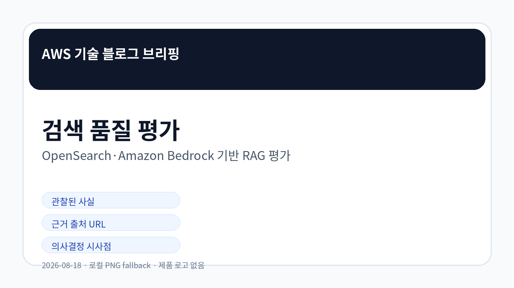
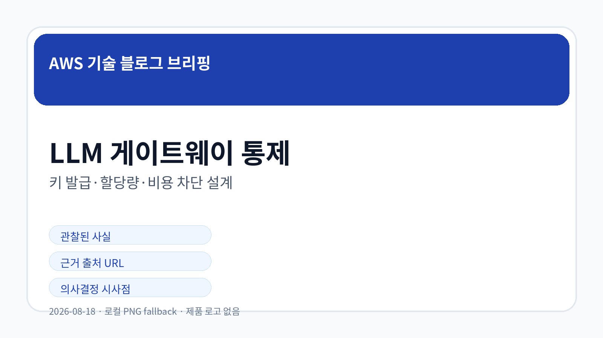
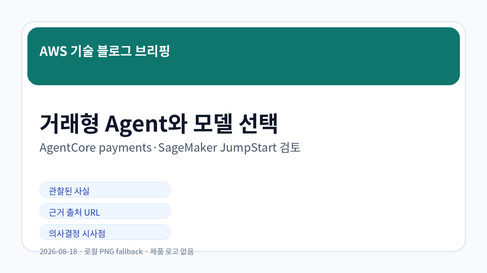

AI Agent 검색 품질을 OpenSearch와 Amazon Bedrock으로 정량 평가하는 방법
OpenSearch와 Amazon Bedrock을 이용해 RAG 기반 AI Agent의 검색 품질을 수치로 평가하는 접근이 소개되었습니다.
원문 확인AWS 공식 블로그 수집 · LLM Wiki 동기화
오늘 신규 저장·동기화된 5개 AWS 공식 블로그 글을 기준으로, 확인 가능한 사실과 의사결정 검토 포인트만 정리했습니다.

AWS 공식 RSS 3개에서 신규 문서 5건을 확인했습니다. RAG 검색 평가, 사내 LLM 게이트웨이 통제, 주간 서비스 업데이트, 거래형 Agent, SageMaker JumpStart 모델 제공이 오늘의 주요 신호입니다.
검색 품질 평가를 통해 RAG 시스템 개선 여부를 수치로 판단하려는 흐름이 확인됩니다.
키 발급, 할당량, 비용 차단이 생성형 AI 확산의 핵심 통제 지점으로 나타납니다.
Agent가 실제 거래 행위에 가까워질수록 승인과 감사 설계가 중요해집니다.
새 모델 제공은 성능·비용·라이선스·데이터 경계를 함께 비교하게 만듭니다.

OpenSearch와 Amazon Bedrock을 이용해 RAG 기반 AI Agent의 검색 품질을 수치로 평가하는 접근이 소개되었습니다.
원문 확인F&F 사례는 Amazon Bedrock 위에서 LiteLLM 게이트웨이를 구성해 키 발급, 모델 접근, 사용량 모니터링, 비용 차단을 다룹니다.
원문 확인Amazon Bedrock AgentCore payments를 활용해 거래를 수행하는 OpenClaw Agent 구축 방식이 다뤄졌습니다.
원문 확인NVIDIA Nemotron 3.5 Lightning이 Amazon SageMaker JumpStart에서 제공되는 업데이트가 확인되었습니다.
원문 확인AWS Weekly Roundup에서 EC2 application status checks, IAM role manager, OpenAI Daybreak on Bedrock 등 여러 업데이트가 확인되었습니다.
원문 확인| 기사 | 게시 | 카테고리 |
|---|---|---|
| AI Agent 검색 품질을 OpenSearch와 Amazon Bedrock으로 정량 평가하는 방법 | 2026-08-17 | AI/ML |
| Amazon Bedrock 기반 사내 LLM 게이트웨이와 비용 통제 사례 | 2026-08-17 | AI/ML |
| Amazon Bedrock AgentCore payments와 연동되는 OpenClaw 거래형 Agent 구축 | 2026-08-18 | AI/ML |
| NVIDIA Nemotron 3.5 Lightning의 Amazon SageMaker JumpStart 제공 | 2026-08-18 | AI/ML |
| EC2 상태 점검, IAM role manager, OpenAI Daybreak on Bedrock 등 AWS 주간 업데이트 | 2026-08-18 | Cloud Architecture |
오늘 수집된 글은 생성형 AI 시스템을 기능 단위로 보는 것을 넘어, 검색 품질 계측, 비용과 권한 통제, 거래 실행 책임, 모델 선택 기준을 함께 점검해야 함을 보여줍니다. 세부 지원 범위와 리전·가격 조건은 원문 기준 확인이 필요합니다.

한국 기업은 기능 발표 자체보다 내부 데이터 접근 권한, 감사 가능성, 비용 상한, 기존 시스템 연동 난이도를 검토 기준으로 삼는 것이 안전합니다.
관찰된 사실: OpenSearch와 Amazon Bedrock을 이용해 RAG 기반 AI Agent의 검색 품질을 수치로 평가하는 접근이 소개되었습니다.
기업 의사결정 시사점/리스크/기회: 검색 품질을 측정하지 않으면 변경 효과를 판단하기 어렵습니다. 평가 데이터셋, 지표, 비용·지연시간 기준을 함께 정의해야 합니다.
관찰된 사실: F&F 사례는 Amazon Bedrock 위에서 LiteLLM 게이트웨이를 구성해 키 발급, 모델 접근, 사용량 모니터링, 비용 차단을 다룹니다.
근거 출처 URL: https://aws.amazon.com/ko/blogs/tech/fnf-llm-gateway-on-amazon-bedrock/
기업 의사결정 시사점/리스크/기회: 사내 LLM 확산에는 API 키 배포보다 권한·할당량·비용 한도·로그 정책이 먼저 필요합니다.
관찰된 사실: Amazon Bedrock AgentCore payments를 활용해 거래를 수행하는 OpenClaw Agent 구축 방식이 다뤄졌습니다.
기업 의사결정 시사점/리스크/기회: 거래형 Agent는 결제·승인·감사 로그가 결합되므로 실행 권한, 사용자 동의, 실패 보상 절차를 검토해야 합니다.
관찰된 사실: NVIDIA Nemotron 3.5 Lightning이 Amazon SageMaker JumpStart에서 제공되는 업데이트가 확인되었습니다.
기업 의사결정 시사점/리스크/기회: 새 모델 선택지는 성능뿐 아니라 라이선스, 데이터 경계, 추론 비용, 기존 MLOps 적합성을 함께 비교해야 합니다.
관찰된 사실: AWS Weekly Roundup에서 EC2 application status checks, IAM role manager, OpenAI Daybreak on Bedrock 등 여러 업데이트가 확인되었습니다.
기업 의사결정 시사점/리스크/기회: 여러 서비스 변경이 동시에 누적되므로 직접 영향 기능을 선별해 릴리스 노트와 내부 표준을 갱신해야 합니다.
Image Prompt 1/2/3은 `/opt/data/out/aws-daily-blog-20260818/image-prompts.md`에 저장했습니다. GPT Image 2는 장시간 실행 timeout으로 완료 검증을 얻지 못해, 한국어 가독성을 우선한 로컬 PNG fallback 이미지를 사용했습니다.